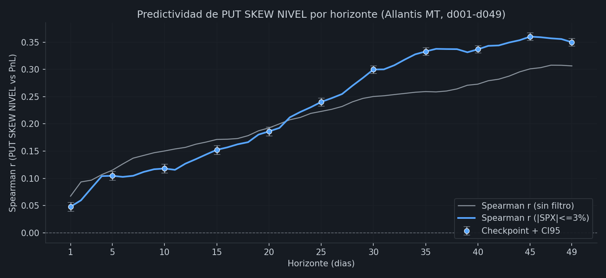
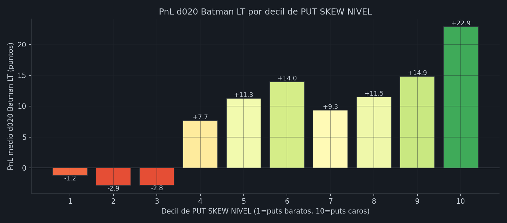
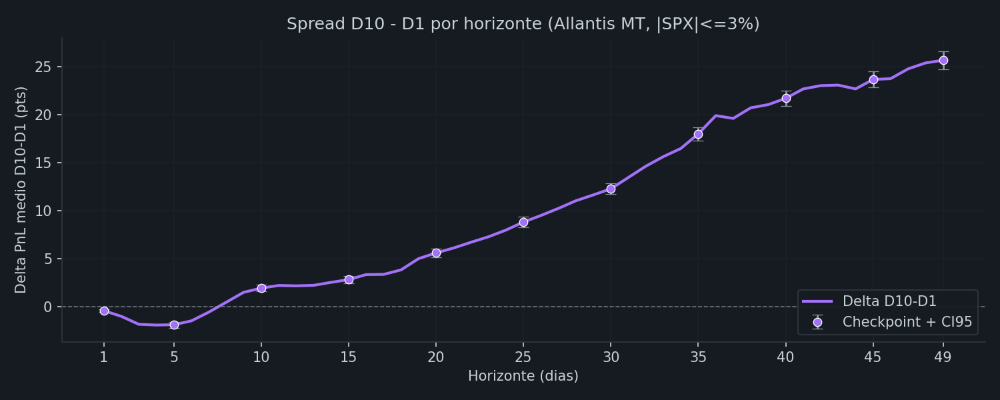
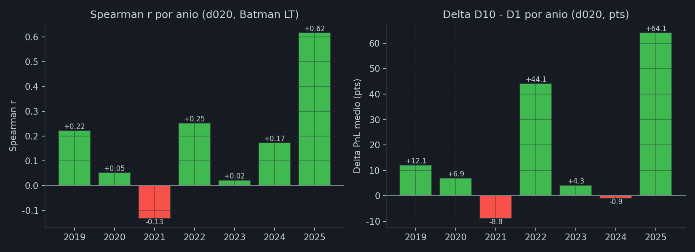
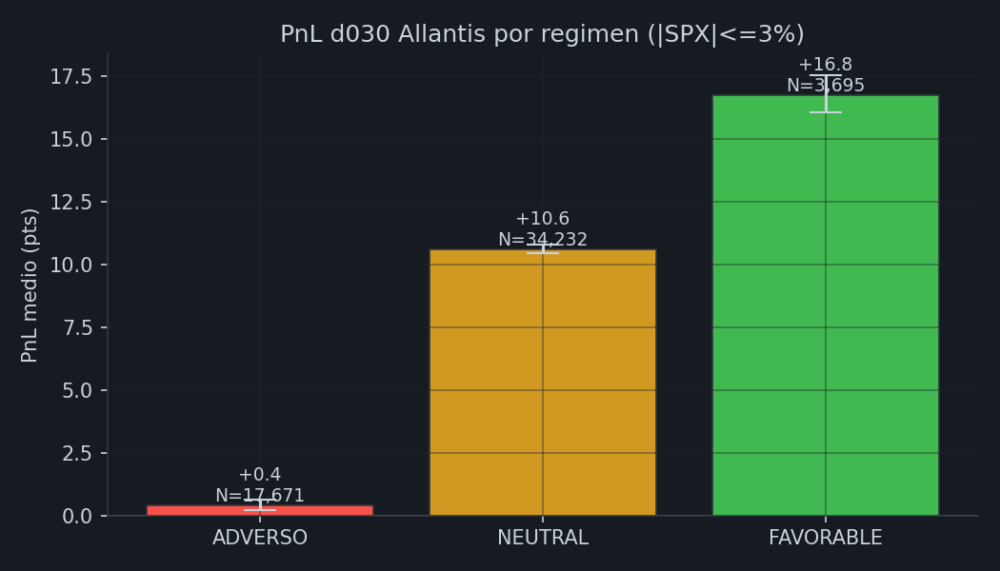
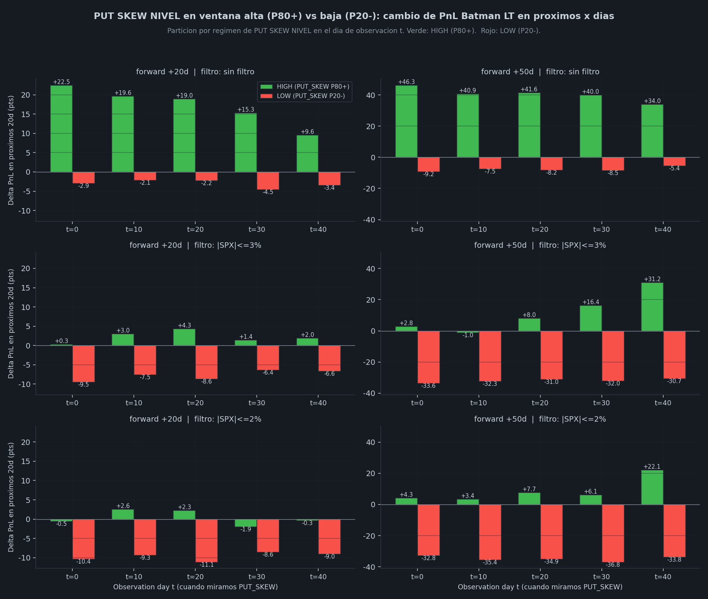

skew_25d_vs50_pct_expanding: percentil historico expanding
(sin lookahead) del spread de IV entre puts OTM 25-delta y puts ATM 50-delta a DTE 60. Mide cuan "caro"
esta el seguro de cola en puts respecto a su propia historia. FAVORABLE >= 80
(puts OTM caros, alta demanda de proteccion / volatilidad), ADVERSO ≤ 20 (puts
baratos, complacencia), NEUTRAL 20-80. OJO BWB: la convencion se
invierte (BWB vende puts -> prefiere puts baratos -> BWB FAV = pct ≤ 20).
PUT SKEW NIVEL es el percentil expanding del spread de implied volatility entre el put OTM 25-delta y el put ATM 50-delta, medido a DTE 60 con snapshot 10:30 ET. "Expanding" significa que cada dia el percentil se calcula contra TODO el historial previo (sin lookahead) — empieza poco discriminante en 2019 y converge a una distribucion estable hacia 2021+.
iv_put_25d - iv_put_50d (spread crudo, ~0.01-0.05 en escala IV).Estrategia primaria de validacion: Allantis MT (~145,870 trades 2019-2025). Allantis es delta-neutral y se beneficia de: (a) skew alto que paga primas de hedge ricas, (b) mean-reversion del skew durante la vida del trade. La relacion PUT SKEW ↔ PnL Allantis es especialmente clara cuando el SPX NO se mueve (filtro ±3% en la ventana del trade), porque en esos regimenes el delta/gamma no contamina la senal y queda solo el efecto de captura de prima de skew.
Para cada horizonte d001 a d049 calculamos:
PnL_d{X}_mediana.Filtro principal: |SPX_chg_pct_d030| ≤ 3% (trade cuya ventana SPX se mueve menos de un 3%). Este filtro retiene ~38% del universo y es donde la senal de skew se ve mas limpia. Tambien reportamos resultados sin filtro para comparar.
Curva de correlacion de rangos entre el PUT SKEW NIVEL al dia de entrada del trade y el
PnL_d{X}_mediana a cada horizonte. Comparamos resultados sin filtro
vs filtro |SPX|≤3%. Si el filtro AUMENTA la correlacion, eso es evidencia de
que la senal es genuina (skew, no beta).

Lectura: con filtro ±3%, la correlacion sube respecto a sin filtro en la mayoria de horizontes — confirma que el efecto del skew se desvirtua por movimiento del SPX en el universo bruto y se hace nitido cuando aislas regimenes flat.
Particionamos el universo Allantis filtrado en 10 grupos iguales (deciles) ordenados por PUT SKEW NIVEL al dia de entrada. D1 = puts mas baratos (SKEW bajo), D10 = puts mas caros (SKEW alto). Si la senal es predictiva, deberia existir progresion creciente D1 < D2 < ... < D10 en PnL medio.

Diferencia de PnL medio entre top decil (D10) y bottom decil (D1) a cada horizonte. Si el spread es positivo y crece con el horizonte, el efecto del skew tiene persistencia.

Recalculamos Spearman r y delta D10-D1 anio a anio. Verde = positivo, rojo = negativo. Una senal robusta debe mantener signo positivo en mayoria de anios. Per la documentacion de research, esta relacion fue LOYO 5/7 (positivos: 2019, 2020, 2022, 2024, 2025; negativos: 2021, 2023).

Misma logica que las bandas de la grafica del header. Aqui medimos el PnL medio (con CI95 bootstrap) de los trades historicos cuando el score estaba en cada zona, en dos horizontes: d030 (focal del MD) y d050 (mid-life del trade).

Pregunta operativa: "tengo un trade YA ABIERTO; si entra una ventana donde PUT SKEW NIVEL sube a P80+ o baja a P20- en t = 0/10/20/30/40 dias despues de la entrada, como cambia mi PnL los proximos 20-50 dias respecto a HOY?"
Verde = HIGH (P80+ en t), rojo = LOW (P20- en t). Las tres filas comparan resultados sin filtro, con |SPX|≤3% en la ventana, y con |SPX|≤2%. Filtros estrictos = control de beta de mercado.

PUT SKEW NIVEL es una senal estructural del mercado: caracteriza el "precio del miedo en puts". Distintas estrategias lo usan con distintas convenciones segun si compran o venden vol de puts:
La tabla siguiente muestra el PF en zona FAV (pct ≥ 80) por dia de evaluacion (d001-d010) para las 3 estrategias usando la convencion estandar. Para BWB el numero "PF en pct ≥ 80" es bajo precisamente PORQUE para BWB es zona adversa.